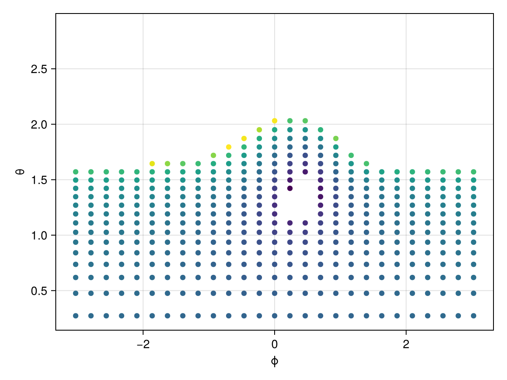
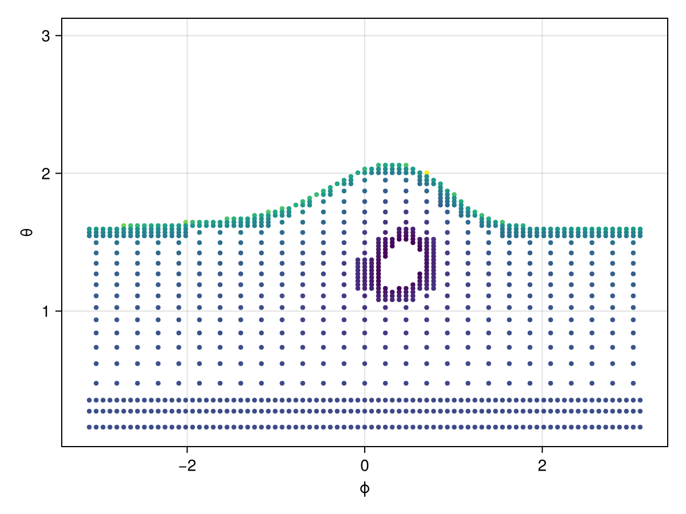
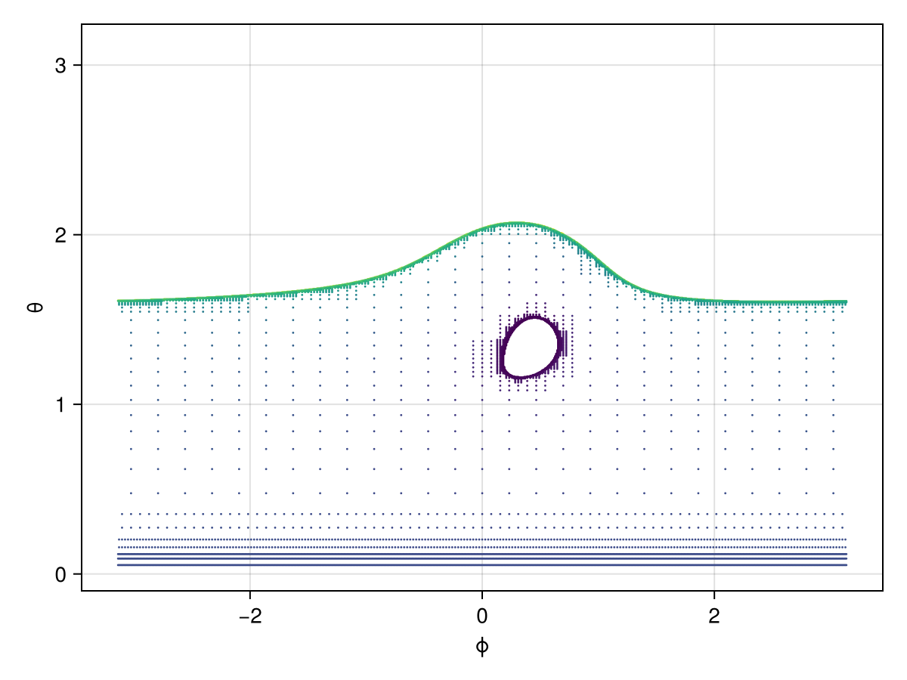
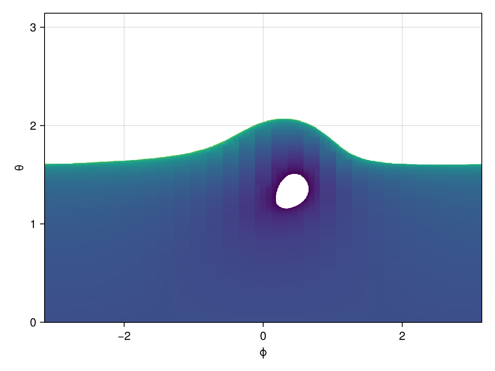
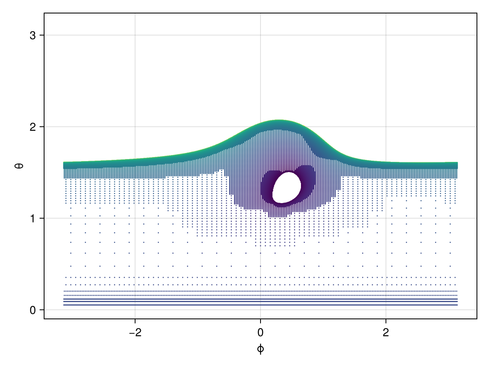
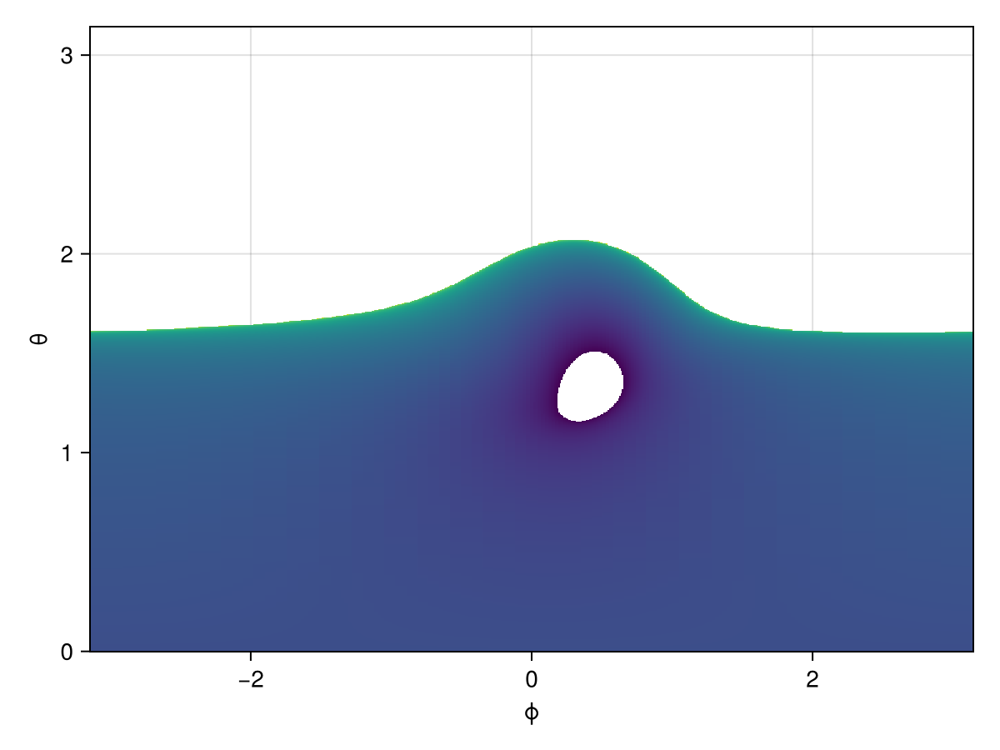

Adaptive tracing
Gradus.jl has a variety of skies and image planes that it supports, which act as a method for representing the view of a particular observer in the system. The difference in definition that Gradus uses is that a sky represents either a full sphere (or hemisphere) of possible trajectories, whereas a image plane is a subset of the sphere that projects onto a two-dimensional plane. Image planes are only really used in the context of calculating observational signatures from the perspective of telescopes, whereas skies are used as intermediary representations to calculate e.g. illumination patterns or visibilities.
To integrate over a sky, each angle pair $(\theta, \phi)$ is used to calculate a direction vector, which is transformed by the local basis into an initial velocity vector that is sensitive to the motion of the emitter. These trajectories can be heavily distorted due to relativistic beaming if the emitter is moving at relativistic speeds.
One of the main problem with integrating over a sky in any kind of numerically meaningful way is that the angles, if sampled uniformly over $\theta \sim \mathcal{U}(0, \pi)$ and $\phi \sim \mathcal{U}(0, 2\pi)$, then the majority of trajectories will be scrunched near the poles. To avoid this issue, one can instead sample $\cos \theta \sim \mathcal{U}(-1, 1)$, which acts to impose the $\sin \theta$ probability density term.
This however still has the problem that often very few regions of the sky actually represent something interesting. For example, say we were calculating the illumination pattern of the disc for an emitter close the black hole – we do not care about those trajectories that fall into the black hole or escape to infinity, only those that hit the disc. However, a hand-wavey 50% of the sky will be either the black hole or infinity, so it is wasting precious CPU cycles calculating those trajectories when we know they are not relevant to our result.
This is where adaptive tracing is useful. It traces an initial coarse grid of pilot geodesics that can be used to work out where information of interest is in the sky.
To illustrate this, we'll use a pre-defined adaptive sky implementation, but at the end of these instructions will be a section on Custom refinement criteria.
using Gradus, Makie, CairoMakie
m = KerrMetric(1.0, 0.998)
# the ring-corona can also be used to represent any off-axis point
corona = RingCorona(; r = 10.0, h = 4.0)
d = ThinDisc(0.0, Inf)
sky = AdaptiveSky(m, corona, d)The AdaptiveSky uses a grid of 3x3 cells, where each cell can be continuously refined to smaller 3x3 cells. It refers to each refinement as a level, where level == 1 are the top 9 cells.
We need to prime the refined grid, so we trace three levels, corresponding to $9^3 = 729$ trajectories.
Gradus.trace_initial! — Functiontrace_initial!(sky::AdaptiveSky; level = 3)Initialise the sky to a given level of refinement.
# trace an initial grid of points
trace_initial!(sky)The printout may record a greater number of values than you expect. This is because it is recording the number of values it has stored, and some cells double up in the implementation (though they are not traced, their memory is duplicated currently).
We can visualise the sky using one of the unpacking functions
Gradus.unpack_sky — Functionunpack_sky(sky::AdaptiveSky)Return three arrays, representing the x, y coordinates of each point, and it's associated value V.
The V type of the sky we have constructed is CoronaGridValues.
function plot_sky(sky; kwargs...)
phi, cos_theta, values = unpack_sky(sky)
theta = acos.(cos_theta)
# get the radius that each geodesic hit
Rs = [v.r for v in values]
fig, ax, _ = scatter(phi, theta; color = log10.(Rs), kwargs...)
ax.xlabel = "ϕ"
ax.ylabel = "θ"
fig
end
plot_sky(sky)
Not all of the points have been drawn, since those that either fell into the black hole or went to inifinity had their radius set to NaN. This is a feature of the particular AdaptiveSky we have used, but you can handle this however you like in your own implementation.
Lets say we are now interested in the edges of the disc, and want to refine those points. We can define a refine condition that is given pairs of neighbouring points and asks whether the cells they are in need to be refined.
In our case, if one or the other is NaN (but not both), we want to refine those cells. We'll implement the full function, but there are utilities to help as well like Gradus.refine_function.
function refine_edges(sky::AdaptiveSky, i1::Int, i2::Int)
v1 = sky.values[i1]
v2 = sky.values[i2]
if isnan(v1.r) && isnan(v2.r)
false # do not refine
else
isnan(v1.r) || isnan(v2.r)
end
end
trace_step!(sky; check_refine = refine_edges, verbose = true)Plotting the sky again
plot_sky(sky; markersize = 6)There is currently a bug where the bottom row of cells are always refined when checking NaN. This will be fixed in future versions.

We can run this step a couple more times:
for i in 1:2
trace_step!(sky; check_refine = refine_edges, verbose = true)
end
plot_sky(sky; markersize = 2)
Cool, now let's inpaint the rest using an interpolation scheme:
Gradus.fill_sky_values — Functionfill_sky_values(sky::AdaptiveSky{T,<:CoronaGridValues}, N)Returns three dense arrays, two vectors representing the θ and ϕ, and a grid with the averaged CoronaGridValues at that point, computed using vector_average. This effectively acts to fill in the sky with N x N points using the information calculated by the adaptive sky.
fill_sky_values(
sky::AdaptiveSky{T,<:CoronaGridValues},
phi_grid::AbstractVector,
theta_grid::AbstractVector
)Returns only the grid.
The interpolation scheme used is very poor at the moment, and effectively does column-wise interpolation, without considering other surrounding neighbours. This will also be fixed in future versions.
phi, theta, grid = fill_sky_values(sky, 1080)
Rs = [v.r for v in grid]
fig, ax, _ = heatmap(phi, theta, log10.(Rs)')
ax.xlabel = "ϕ"
ax.ylabel = "θ"
fig
What if we had a refinemenet criteria based on the relative values of neighbours?
function refine_distant(sky::AdaptiveSky, i1::Int, i2::Int)
v1 = sky.values[i1]
v2 = sky.values[i2]
if isnan(v1.r) && isnan(v2.r)
false # do not refine
else
# refine if they are more than 10% different
!isapprox(v1.r, v2.r, rtol = 0.1)
end
end
# create a fresh sky
sky = AdaptiveSky(m, corona, d)
trace_initial!(sky)
for i in 1:3
trace_step!(sky; check_refine = refine_distant, verbose = true)
end
plot_sky(sky; markersize = 2)
Now our inpainting should look more convincing
phi, theta, grid = fill_sky_values(sky, 1080)
Rs = [v.r for v in grid]
fig, ax, _ = heatmap(phi, theta, log10.(Rs)')
ax.xlabel = "ϕ"
ax.ylabel = "θ"
fig
Custom adaptive refinement
Gradus.AdaptiveSky — TypeAdaptiveSky(V::Type, calc_v::Function, check_refine::Function)Create an adaptive grid for the local sky, where each point is assigned a value V. Must also provide two functions with the following prototypes:
# Calculate the new grid value at `(theta, phi)`
calculate_value(theta, phi)::V
# Return true if the cells being compared need to be refined.
check_refine(sky::AdaptiveSky, i1::Int, i2::Int)::BoolThe values for a given cell can be access with sky.values[i].
For the interpolation schemes to work, the following function must also be defined for the value type:
vector_average(weight::AbstractVector{<:Number}, values::AbstractVector{V})::V where{V}
# Return something that represents a null / NaN of the given type
make_null(V::Type)::VGradus.trace_step! — Functiontrace_step!(sky::AdaptiveSky; check_refine = sky.check_refine, verbose = false)Apply the refinement metric across each cell boundary and refine the cells where the metric is true.
A different refinemenet metric from the default can be used by passing the check_refine kwarg, using the same function signature as documented in AdaptiveSky.
If verbose is true, a progress bar will be displayed during refinement.
Gradus.refine_function — Functionrefine_function(f)Used to define a new check_refine function for an AdaptiveSky. This can be passed e.g. to find_need_refine or refine_and_trace!.
The function f is given each cell's value and should return true if the cell should be refined, else false.
Warning
This function currently only works with AdaptiveSky when the value type is CoronaGridValues, as it first checks if the radii are NaN.
Gradus.fine_refine_function — Functionfine_refine_function(f)Like refine_function but calls the original refine function in AdaptiveSky first. This is "fine" in the sense that it applies fine-grained refinement criteria.
Gradus.Grids.AdaptiveCell — TypeAdaptiveCell{P}A cell in the AdaptiveGrid. P is the point type (conventionally an SVector).
Gradus.Grids.AdaptiveGrid — TypeAdaptiveGrid{P}(x1, x2, y1, y2; x_periodic = true)Constructs an AdaptiveGrid with domain x1 to x2, and y1 to y2. If periodic = true then the grid is periodic in the x direction.
An AdaptiveGrid is an implementation of a grid refinement structure, which splits the domain into 3x3 cells which can be refined into 3x3 child cells and so forth.
Each refinement is referred to as a level, with level == 1 being the top level (i.e. initial 9 cells). The indexing scheme for (child) cells is column orientated:
1 | 4 | 7
---+---+---
2 | 5 | 8
---+---+---
3 | 6 | 9